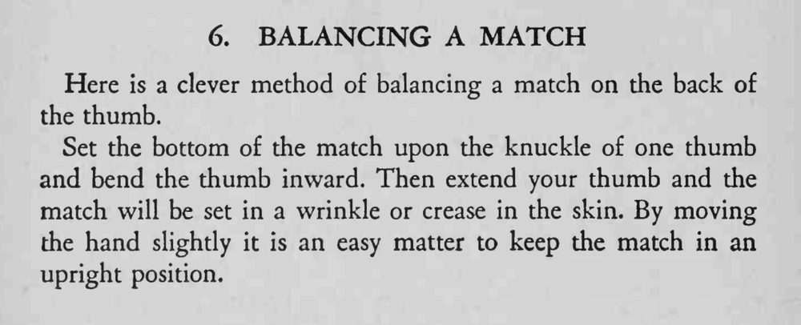

一根火柴竟能斜立在拇指背上，晃来晃去却不倒。
让火柴卡在拇指关节的皱纹里，比平放更容易立住。

Here is a clever method of balancing a match on the back of the thumb. Set the bottom of the match upon the knuckle of one thumb and bend the thumb inward. Then extend your thumb and the match will be set in a wrinkle or crease in the skin. By moving the hand slightly it is an easy matter to keep the match in an upright position.